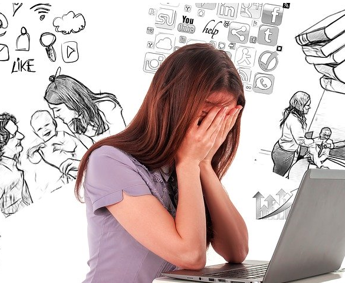
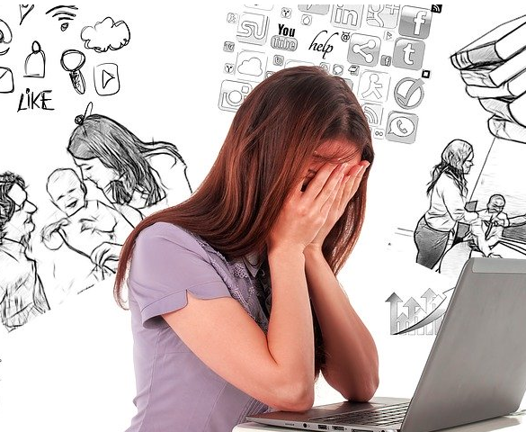

Dec 4, 2019
Internet is affecting our life in various ways.
Sometimes, it can be a good helper; sometimes, it is a mental poison.
If you are struggling with mental issues, visit this webstie or call 1-800-273-8255 for help
 

People always focus on the convience and happiness that Internet brought to us. However, in our soceity today, internet also causes some serious mental illnesses
Internet could also work as a tool to ease the pain of mental illness. When you can't reach a doctor for your mental health, many online sources can help you to release your stress. Check this article and find the best source that fits your situation.

Lots of kids nowadays love video games, so its completely normal right? Well, as you will see, some children can take video games to the extreme. They can get to the point of not only ruining their lives, but also ruining another's.
Is your child different?
Gaming can be one of the funnest things to spend our free time on. When this hobby becomes an addiction, what happens when a gaming addict can't stop?